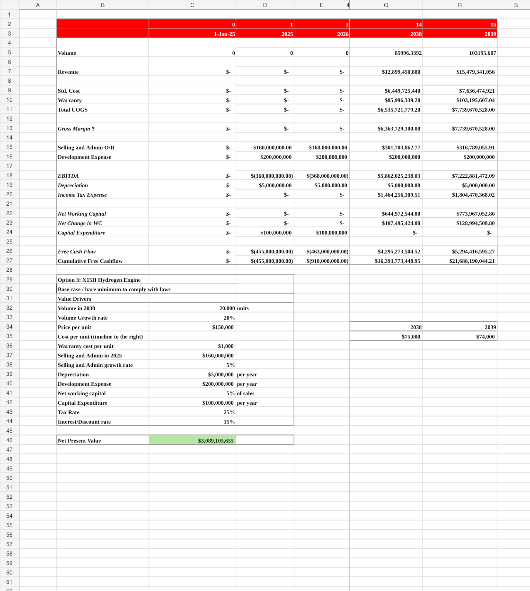
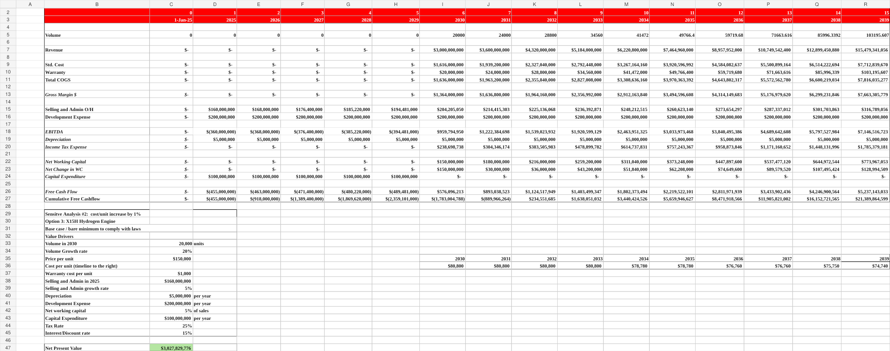

Corporate Finance · Capital Budgeting · Regulation
A long-term investment case evaluating three heavy-duty engine strategies under EPA Phase 3 greenhouse-gas regulation and uncertain future demand.
The problem & context
Cummins faced a strategic decision about its heavy-duty engine portfolio as EPA Phase 3 GHG standards increased pressure to reduce emissions. The team evaluated the current X15 platform, an expanded X15 strategy, and the X15H hydrogen engine. The decision required balancing regulatory compliance, development and capital spending, customer adoption, operating economics, and long-term shareholder value.
My role
I led a six-person team and owned a significant portion of the financial-modeling and recommendation work. I helped translate operating assumptions into 15-year cash-flow projections, compared NPV outcomes across the alternatives, and stress-tested the recommendation under regulatory and cost-inflation scenarios.
Methodology
Forecast revenue, costs, development spending, CapEx, and free cash flow for each technology pathway.
Model an EPA rollback/delay scenario and persistent manufacturing-cost inflation.
Compare financial resilience, regulatory readiness, and commercialization risk before making the final recommendation.
Model evidence


Key findings
The X15H hydrogen case generated the highest base-case NPV at approximately $3.09B, substantially above the other two options.
AI-assisted workflow
I used generative AI to challenge assumptions, brainstorm relevant downside scenarios, and improve how the team communicated the financial trade-offs. It was not used to replace the Excel model or the team’s judgment.
Example prompts used for structured thinking:
What assumptions should be stress-tested in a 15-year engine investment under regulatory uncertainty?Review the logic of this sensitivity analysis and identify assumptions that could materially change NPV.AI was used as a support and quality-control tool; calculations and final conclusions were checked against the underlying model.
Outcome / achievement
Led a six-person cross-functional case team and developed a final strategic recommendation supported by quantified base-case and downside analysis for presentation to an industry-judge panel.
Supporting files
The page is designed so a recruiter can understand the project without downloading anything. The original Excel workbook is still available for deeper review.